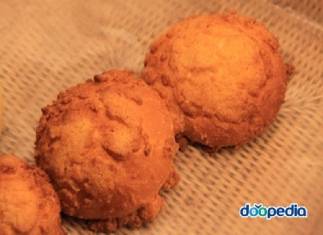

|  |
원래는 일본에서 전해진 그대로 소보루빵, 소보로빵이라고도 했는데, 소보로(そぼろ)'는 일본어로 생선·고기 등을 으깨어 양념한 다음 지져낸 식품 또는 머리칼 등이 얽힌 모양을 말한다. 1997년에 국립국어원이 얼굴이 얽은 사람을 뜻하는 ‘곰보’에 기대어 지금의 이름을 공식용어로 개정했다. 못난이빵이라고도 부른다. 만드는 방법은 체에 친 강력분에 이스트, 설탕, 소금, 분유를 섞고 달걀, 미지근한 물, 버터를 넣어 반죽한 다음 따뜻한 곳에서 40분간 1차 발효를 시킨다. 반죽을 적당한 양으로 분할한 후 둥글리고 10분간 중간 발효시킨 다음 붓으로 물을 발라준 후 소보로 가루를 묻혀 팬에 놓고 젖은 천을 덮어 40분간 2차 발효를 시킨다. 예열된 오븐에서 180℃로 15분간 굽는다. 소보로 가루는 중력분, 분유, 베이킹파우더, 체에 친 베이킹소다에다 거품 낸 버터, 설탕, 물엿을 넣어 섞는다. 여기에 달걀을 넣어서 저어주면서 50% 정도만 반죽하여 과립 상태로 몽글몽글하게 만든다. |